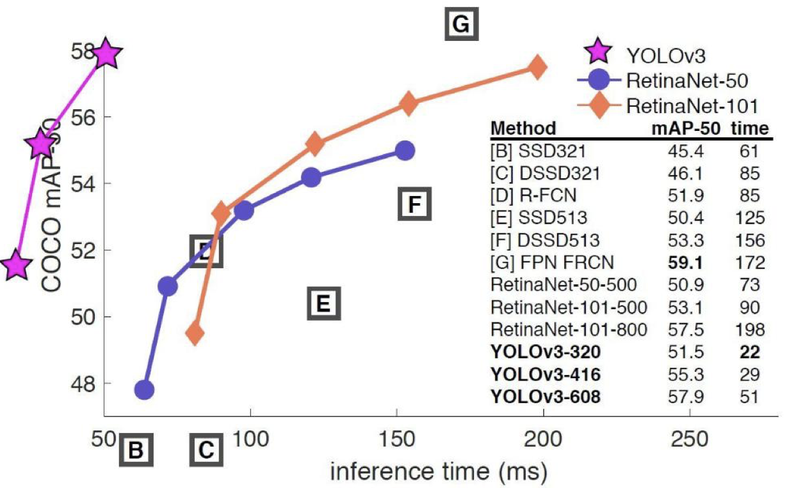
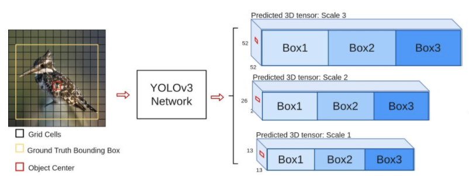
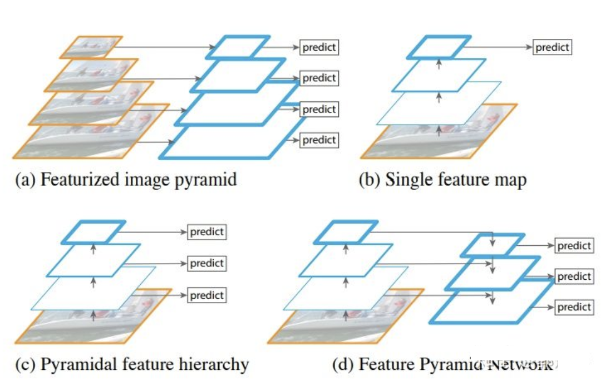
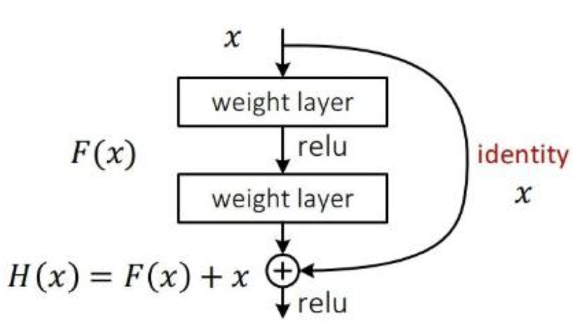
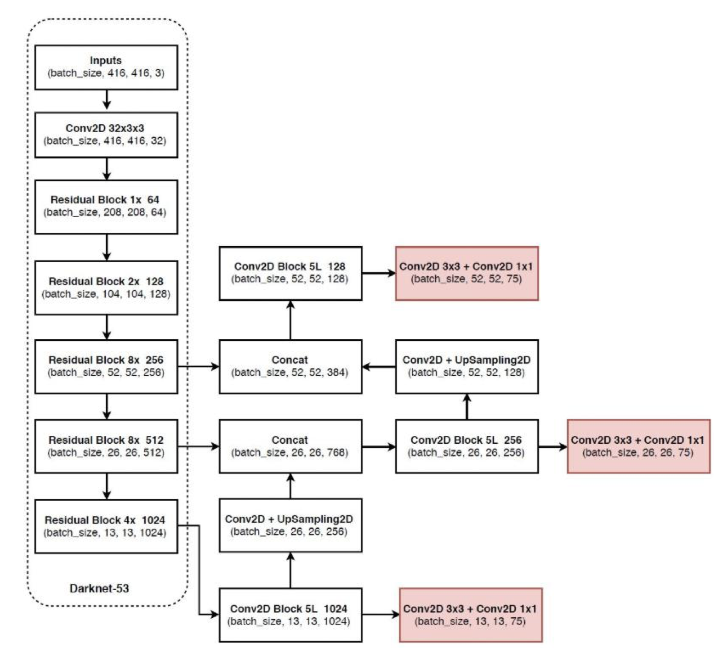
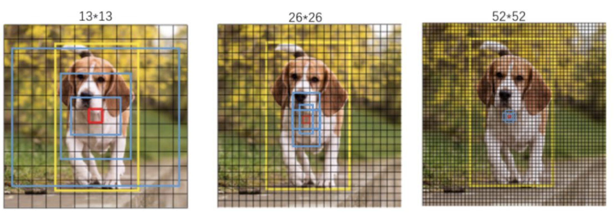
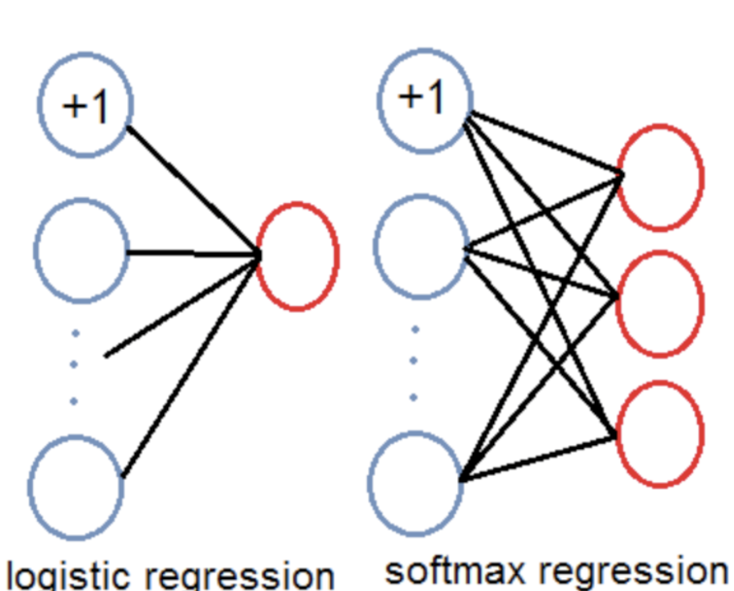
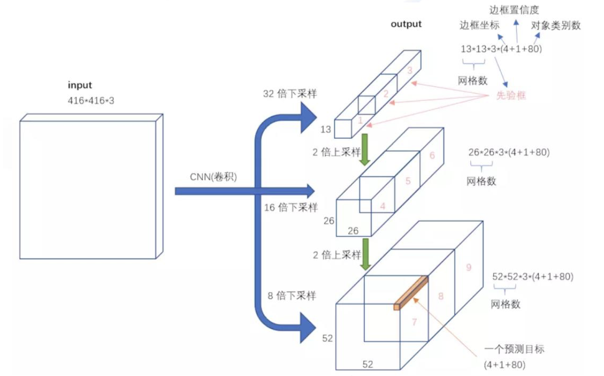

3.10.yoloV3模型
学习目标
- 知道yoloV3的多尺度检测方法
- 知道yoloV3模型的网络结构及网络输出
- 了解yoloV3模型先验框设计的方法
- 知道yoloV3模型为什么适用于多标签的目标分类
yoloV3以V1，V2为基础进行的改进，主要有：利用多尺度特征进行目标检测；先验框更丰富；调整了网络结构；对象分类使用logistic代替了softmax,更适用于多标签分类任务。
1.算法简介
YOLOv3是YOLO (You Only Look Once)系列目标检测算法中的第三版，相比之前的算法，尤其是针对小目标，精度有显著提升。

yoloV3的流程如下图所示，对于每一幅输入图像，YOLOv3会预测三个不同尺度的输出，目的是检测出不同大小的目标。

2.多尺度检测
通常一幅图像包含各种不同的物体，并且有大有小。比较理想的是一次就可以将所有大小的物体同时检测出来。因此，网络必须具备能够“看到”不同大小的物体的能力。因为网络越深，特征图就会越小，所以网络越深小的物体也就越难检测出来。
在实际的feature map中，随着网络深度的加深，浅层的feature map中主要包含低级的信息（物体边缘，颜色，初级位置信息等），深层的feature map中包含高等信息（例如物体的语义信息：狗，猫，汽车等等）。因此在不同级别的feature map对应不同的scale，所以我们可以在不同级别的特征图中进行目标检测。如下图展示了多种scale变换的经典方法。

(a) 这种方法首先建立图像金字塔，不同尺度的金字塔图像被输入到对应的网络当中，用于不同scale物体的检测。但这样做的结果就是每个级别的金字塔都需要进行一次处理，速度很慢，在SPPNet使用的就是这种方式。
(b) 检测只在最后一层feature map阶段进行，这个结构无法检测不同大小的物体
(c) 对不同深度的feature map分别进行目标检测。SSD中采用的便是这样的结构。这样小的物体会在浅层的feature map中被检测出来，而大的物体会在深层的feature map被检测出来，从而达到对应不同scale的物体的目的，缺点是每一个feature map获得的信息仅来源于之前的层，之后的层的特征信息无法获取并加以利用。
(d) 与(c)很接近，但不同的是，当前层的feature map会对未来层的feature map进行上采样，并加以利用。因为有了这样一个结构，当前的feature map就可以获得“未来”层的信息，这样的话低阶特征与高阶特征就有机融合起来了，提升检测精度。在YOLOv3中，就是采用这种方式来实现目标多尺度的变换的。
3.网络模型结构
在基本的图像特征提取方面，YOLO3采用了Darknet-53的网络结构（含有53个卷积层），它借鉴了残差网络ResNet的做法，在层之间设置了shortcut，来解决深层网络梯度的问题，shortcut如下图所示：包含两个卷积层和一个shortcut connections。

yoloV3的模型结构如下所示：

整个v3结构里面，没有池化层和全连接层，网络的下采样是通过设置卷积的stride为2来达到的，每当通过这个卷积层之后图像的尺寸就会减小到一半。残差模块中的1×，2×，8×，8× 等表示残差模块的个数。
4.先验框
yoloV3采用K-means聚类得到先验框的尺寸，为每种尺度设定3种先验框，总共聚类出9种尺寸的先验框。
在COCO数据集这9个先验框是：(10x13)，(16x30)，(33x23)，(30x61)，(62x45)，(59x119)，(116x90)，(156x198)，(373x326)。在最小的(13x13)特征图上（有最大的感受野）应用较大的先验框(116x90)，(156x198)，(373x326)，适合检测较大的对象。中等的(26x26)特征图上（中等感受野）应用中等的先验框(30x61)，(62x45)，(59x119)，适合检测中等大小的对象。较大的(52x52)特征图上（较小的感受野）应用,其中较小的先验框(10x13)，(16x30)，(33x23)，适合检测较小的对象。
直观上感受9种先验框的尺寸，下图中蓝色框为聚类得到的先验框。黄色框式ground truth，红框是对象中心点所在的网格。

5.ligistic回归
预测对象类别时不使用softmax，而是被替换为一个1x1的卷积层+logistic激活函数的结构。使用softmax层的时候其实已经假设每个输出仅对应某一个单个的class，但是在某些class存在重叠情况（例如woman和person）的数据集中，使用softmax就不能使网络对数据进行很好的预测。

6.yoloV3模型的输入与输出
YoloV3的输入输出形式如下图所示： 
输入416×416×3的图像，通过darknet网络得到三种不同尺度的预测结果，每个尺度都对应N个通道，包含着预测的信息；
每个网格每个尺寸的anchors的预测结果。
YOLOv3共有13×13×3 + 26×26×3 + 52×52×3个预测 。每个预测对应85维，分别是4（坐标值）、1（置信度分数）、80（coco类别概率）。
总结
1.yoloV3的多尺度检测方法
在YOLOv3中采用FPN结构来提高对应多尺度目标检测的精度，当前的feature map利用“未来”层的信息，将低阶特征与高阶特征进行融合，提升检测精度。
2.yoloV3模型的网络结构
- 以darknet-53为基础，借鉴resnet的思想，在网络中加入了残差模块，利于解决深层次网络的梯度问题
- 整个v3结构里面，没有池化层和全连接层，只有卷积层
- 网络的下采样是通过设置卷积的stride为2来达到的
3.yoloV3模型先验框设计的方法
采用K-means聚类得到先验框的尺寸，为每种尺度设定3种先验框，总共聚类出9种尺寸的先验框。
4.yoloV3模型为什么适用于多标签的目标分类
预测对象类别时不使用softmax，而是使用logistic的输出进行预测
5.yoloV3模型的输入输出
对于416×416×3的输入图像，在每个尺度的特征图的每个网格设置3个先验框，总共有 13×13×3 + 26×26×3 + 52×52×3 = 10647 个预测。每一个预测是一个(4+1+80)=85维向量，这个85维向量包含边框坐标（4个数值），边框置信度（1个数值），对象类别的概率（对于COCO数据集，有80种对象）。